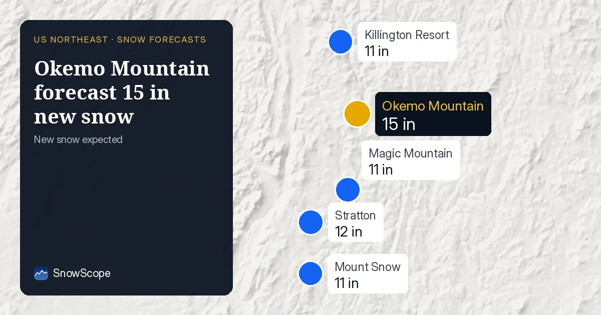

Okemo Mountain forecast 15 in new snow
Okemo Mountain will receive 15 in (38 cm) of new snow by Saturday, with 11 in (29 cm) falling on Friday 13 November when cold air moves in and brings snow to all mountain elevations.
See the live snow forecast for Okemo Mountain in the SnowScope appSnow depth, powder alerts and the 3D map, free.
Thursday: Rain above, snow below 1,640 ft
Snow arrives on Thursday 12 November with 3 in (8 cm) falling. But this event splits: the summit and upper ridges receive snow, while the base area gets rain. The freezing level sits at 3,609 to 3,871 ft (1,100 to 1,180 m) on Thursday, well above the top of Okemo at 3,322 ft (1,012 m). The cold air mass is approaching but hasn't yet fully engulfed the region.
For skiers, this means you can find snow on mid and upper runs by mid-morning Thursday, but expect wet conditions lower down. The snow that falls higher up is denser than deep powder—it comes with marginal temperatures—but it sticks to bare ground and builds a base for the larger event ahead.
| Resort | Snow depth | New snow, 72 h | Coming, next days | Top |
|---|---|---|---|---|
| Okemo Mountain | 0 in (0 cm) | 0 in (0 cm) | 15 in (38 cm) | 3,320 ft (1,012 m) |
| Stratton | 0 in (0 cm) | 0 in (1 cm) | 12 in (30 cm) | 3,881 ft (1,183 m) |
| Magic Mountain | 0 in (0 cm) | 0 in (0 cm) | 11 in (29 cm) | 2,851 ft (869 m) |
| Killington Resort | 0 in (0 cm) | 0 in (1 cm) | 11 in (28 cm) | 4,140 ft (1,262 m) |
| Mount Snow | 0 in (0 cm) | 0 in (0 cm) | 11 in (27 cm) | 3,586 ft (1,093 m) |

Friday: When snow reaches everywhere
Friday 13 November delivers the main punch. SnowScope shows 11 in (29 cm) falling that day, more than three times Thursday's total. By Friday morning, the cold air core has moved in and the freezing level crashes to 1,017 to 1,870 ft (310 to 570 m). This means snow falls across the base area, mid-slopes, and summit all day.
This is why Friday 13 November is the snowiest day of the event. The transition from rain to snow happens gradually through Friday morning as temperatures drop. By mid-afternoon, the entire mountain should be snow-covered. Saturday adds a negligible trace and the system moves out.
Height changes everything
Okemo stretches from 1,159 ft (353 m) at the base to 3,322 ft (1,012 m) at the peak. The forecast shows the summit will collect about 9 in (22 cm) of new snow over the next week. Mid-slopes around 2,237 ft (682 m) will get 6 in (16 cm). The base will only see 2 in (6 cm) because much of Thursday is rain down there and Saturday is barely measurable.
This gradient is normal for November: the mountains are still warm and air masses are adjusting. The best snow will be on higher terrain. Friday afternoon, once the system is fully in place and snow is falling at the base, that is when you get the best conditions—newer snow at the base, deeper base at the summit, and stable coverage across the mountain.
Okemo leads the Northeast resorts
Three major resorts sit in the forecast track: Okemo Mountain, Stratton, and Magic Mountain. Okemo will see 15 in (38 cm) over three days, the most of any resort. Stratton receives 12 in (30 cm), and Magic Mountain gets 11 in (29 cm). The slight differences reflect terrain positioning and summit elevation.
Stratton's higher top at 3,881 ft (1,183 m) means it squeezes a bit more snow from the system, especially at the summit where 23 cm is forecast. All three sit within about 30 km of each other, so they experience similar weather, but small differences in elevation and position matter.
Measurement context: Starting from zero
The region starts completely dry. The nearest weather station at Landgrove, about 10 miles from Okemo, measured 0 cm on 10 November. When Thursday's snow arrives, it lands on dry ground, which helps it bond and stick around even if lower elevations warm up.
The lack of existing base means Friday's heavier snow is crucial; that is what builds the season's first foundation. With 50 resorts forecast to get measurable snow by Saturday and the region jumping from 50 sq mi (130 km²) of snow cover to 7,816 sq mi (20,240 km²), this event marks the start of winter across the Northeast.
Tips for skiers
- Thursday morning starts wet at the base. Check conditions on lower runs before heading out; snow-line varies with slope aspect and elevation. Upper terrain is your best bet early on.
- Friday is the main event. The freezing level sinks through the morning, so conditions improve as the day goes on. Mid-morning onwards is prime time, especially on mid to upper slopes.
- Watch slope aspect on Friday morning. Warmer south-facing lower slopes may see rain still; north-facing slopes higher up will have snow. Adjust your route accordingly.
- Early-season snow is thin. Rocks can still break through, especially on south-facing runs and lower elevations. Walk your line before you ski.
- Check the official avalanche bulletin before you leave the piste, especially on Friday afternoon when the snow is fresh and coverage is new across slopes.
About these numbers
Resort snow depths are the deepest snow on the resort's upper slopes on the date shown; they are estimates for an area, not a measurement at one point. Forecasts can change. Always read the official avalanche bulletin before going off-piste.
Official avalanche bulletins: Mount Washington Avalanche Center
Cite this report
For research, teaching or the press: the numbers and charts are free to reuse under CC BY 4.0 with this citation.
SnowScope (2026), Okemo Mountain forecast 15 in new snow, https://snowscope.app/blog/en/2026/11/us-northeast-okemo-mountain-snow-forecast-11-november-2026.html, accessed 2026-11-11
SnowScope (Atlas Labs). (2026, November 11). Okemo Mountain forecast 15 in new snow. SnowScope snow reports. https://snowscope.app/blog/en/2026/11/us-northeast-okemo-mountain-snow-forecast-11-november-2026.html
BibTeX
@misc{snowscope2026usnortheastokemomountain,
author = {{SnowScope (Atlas Labs)}},
title = {Okemo Mountain forecast 15 in new snow},
year = {2026},
month = nov,
howpublished = {\url{https://snowscope.app/blog/en/2026/11/us-northeast-okemo-mountain-snow-forecast-11-november-2026.html}},
note = {Published 2026-11-11 18:44 UTC; accessed 2026-11-11}
}· CC BY 4.0 · Methods, data and tools →
Okemo Mountain: snow and temperature by height, this winter vs last (tools) →
Follow Okemo Mountain
Free: a message when fresh snow is coming, and the forecast every morning.
More snow reports

As of 13 November, Killington's 12 cm is ahead of 42 past winters at this date; peak weeks typically arrive weeks 9, 11, and 10.

Is there more snow than a year ago? We compared today with 12 November last winter at 4 resorts in the US Northeast: 0 of them have more snow now, …

Magic Mountain Ski Area in southern Vermont sits on thin natural snow. Peak depths at the base are 21 in (54 cm); at the top, 26 in (67 cm). Data from 46 past winters, November 2026.